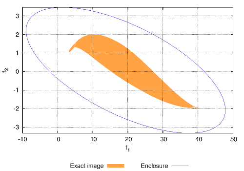

- Generated on Mon May 1 2017 01:17:05 for MC++ by
 1.8.11
1.8.11
|
MC++
|
An ellipsoid with center \(c \in \mathbb R^n\) and shape matrix \(Q \in \mathbb S_{+}^n\) is defined as
\begin{align*} \mathcal E(c,Q) := & \left\{ \left. c + Q^\frac{1}{2} v \ \right| \ \exists v \in \mathbb R^{n}: \ v^T v \leq 1 \right\} \subseteq \mathbb R^{n} . \end{align*}
As well as constructors and data access/manipulations functions, the class mc::Ellipsoid provides a set of functions for ellipsoidal calculus. Data manipulation functions include:
Ellipsoidal calculus includes:
Besides ellipsoidal calculus, the classes mc::EllImg and mc::EllVar provide an implementation of ellipsoidal arithmetic in order to enclose the image \(\mathcal E(c_f,Q_f)\) of an \(n_x\)-dimensional ellispoid \(\mathcal E(c_x,Q_x)\) under a vector-valued function \( f:\mathbb{R}^{n_x}\to\mathbb{R}^{n_f} \):
\begin{align*} \mathcal E(c_f,Q_f) \supseteq & \left\{ f(x) \,\mid\, x\in \mathcal{E}(c_{x},Q_x) \right\}. \end{align*}
Notice that the exact image \(\left\{ f(x) \,\mid\, x\in \mathcal{E}(c_{x},Q_x) \right\}\) is not an ellipsoid in general.
The class mc::EllImg is derived from mc::Ellipsoid. The implementation of mc::EllImg and mc::EllVar relies on the operator/function overloading mechanism of C++. This makes the computation of the ellipsoidal enclosure for the image of an ellipsoid under a factorable function both simple and intuitive, similar to computing function values in real arithmetic or bounds based on interval, Taylor or Chebyshev model arithmetics (see Non-Verified Interval Arithmetic for Factorable Functions, Taylor Model Arithmetic for Factorable Functions, Chebyshev Model Arithmetic for Factorable Functions). mc::EllImg stores a column vector CPPL::dcovector and a sparse symmetric matrix CPPL::dssmatrix provided by the LAPACK wrapper CPPLAPACK. The column vector stores the center and the sparse symmetric matrix the shape of a lifted ellipsoid, which is the result of adding extra dimension for each operation participating in the factorable function. Note that the implementation in mc::EllImg and mc::EllVar is not verified in the sense that rounding errors are not accounted for during the propagation.
The classes mc::EllImg and mc::EllVar are templated in the interval type used to bound the nonlinearity of the function, By default, mc::EllImg and mc::EllVar can be used with the non-verified interval type mc::Interval of MC++. For reliability, however, it is recommended to use verified interval arithmetic such as PROFIL (header file mcprofil.hpp) or FILIB++ (header file mcfilib.hpp).
In order to define the ellipsoid \(\mathcal E(c_x,Q_x)\) with
\begin{align*} c_x = & \left(\begin{array}{c} 3\\4\end{array}\right),\ \text{and} & Q_x = & \left(\begin{array}{cc} 5 & 4 \\ 4 & 5 \end{array}\right). \end{align*}
we proceed as follows:
This ellipsoid is simply displayed as:
In the present case, the following information is displayed:
center:
3.00000e+00
4.00000e+00
shape:
5.00000e+00 {4.00000e+00}
4.00000e+00 5.00000e+00
In order to illustrate ellipsoidal calculus, suppose that we want to add the interval box \([0,0.1]^2\) to the foregoing ellispoid and determine an external ellispoidal approximation of this geometric sum.
Suppose that we want to compute an ellipsoidal enclosure for the image set of function:
\[ f(x) = \left(\begin{array}{c} \log(x_{1})+x^{2}_{2} \\ \sin(x_{1})-\cos(x_{2}) \\ \end{array} \right) \qquad \text{with} \qquad x \in \left\{ \left(\begin{array}{c} 3 \\ 4 \\ \end{array} \right)+ \left(\begin{array}{cc} 5 & 4 \\ 4 & 5 \\ \end{array} \right)^{1/2}v : v^{\rm T}v\leq 1 \right\}. \]
For simplicity, the underlying interval bounds are propagated using the default interval type mc::Interval, the required header files are:
First, the host ellipsoidal set for the independent variables \(x_{1}\) and \(x_{2}\) is specified as:
Then, the independent variables themselves are specified as:
If independent interval bounds are known for each variable they can be passed as an optional third argument to the set function.
The dependent variables \(f_{1}(x)\) and \(f_{2}(c)\) are propagated as:
and the lifted ellipsoid can be displayed as:
lifted ellipsoidal image of f =
center:
3
4
18.5
0.913697
19.4137
-0.0590929
0.012758
0.0718509
Shape:
9.46133 {7.56906}{60.5525}{4.07224}{64.6247}{2.82094}{-4.61268}{-7.43362}
7.56906 9.46133 {75.6906}{3.25779}{78.9484}{3.52618}{-3.69015}{-7.21632}
60.5525 75.6906 752.099 {26.0623}{778.161}{28.2094}{-29.5212}{-57.7306}
4.07224 3.25779 26.0623 2.52547 {28.5878}{1.21416}{-1.98534}{-3.1995}
64.6247 78.9484 778.161 28.5878 806.749 {29.4236}{-31.5065}{-60.9301}
2.82094 3.52618 28.2094 1.21416 29.4236 4.40317 {-1.37529}{-5.77847}
-4.61268 -3.69015 -29.5212 -1.98534 -31.5065 -1.37529 4.34584 {5.72113}
-7.43362 -7.21632 -57.7306 -3.1995 -60.9301 -5.77847 5.72113 11.4996
Finally, the lifted ellipsoid can be projected in the space of dependent variables to obtain the desired image enclosure:
Ellipsoidal enclosure Ef =
center:
1.94137e+01
7.18509e-02
shape:
8.06749e+02 {-6.09301e+01}
-6.09301e+01 1.14996e+01
After this, the ellipsoid can be manipulated according to the rules of ellipsoidal calculus (see Ellipsoidal Calculus and Ellipsoidal Arithmetic for Factorable Functions). A comparison between the exact image and the ellipsoidal enclosure is presented in the following figure, in orange the exact image and in blue the boundary of the ellipsoidal enclosure.

|
The class mc::EllImg and mc::Ellipsoid have public members called mc::EllImg::options and mc::Ellipsoid::options (static), respectively, that can be used to set/modify a number of options. Note that mc::EllImg::options is a superset of mc::Ellipsoid::options since mc::EllImg is derived from mc::Ellispoid. For instance, options can be set as follows:
The full set of available options is reported in the following tables.
| Name | Type | Default | Description |
|---|---|---|---|
PREALLOC | unsigned long | 0 | Number of rows to preallocate in the shape matrix and center vector |
CHEBUSE | bool | false | Whether to use Chebyshev expansion to compute a linear approximation and bound the nonlinear dependencies of univariate terms |
CHEBORDER | unsigned int | 5 | Order of the Chebyshev expansion (only of CHEBUSE = true) |
| Name | Type | Default | Description |
|---|---|---|---|
PSDCHK | bool | false | Whether or not to check positive semi-definiteness of shape matrices |
PSDTOL | double | 1e2*MACHPREC | Absolute tolerance for positive semi-definiteness check of shape matrices |
RKTOLA | double | MACHPREC | Absolute tolerance for rank and regularization of shape matrices |
RKTOLR | double | MACHPREC*1e6 | Relative tolerance for rank and regularization of shape matrices |
ROOTTOL | double | 1e-10 | Absolute stopping tolerance for root-finding method (objective function value less than ROOTTOL) |
ROOTSECANT | bool | false | Whether to use the secant method for root finding |
ROOTMAXIT | bool | 0 | Maximum number of iteration for root-finding method (no maximum when ROOTMAXIT=0) |
Errors are managed based on the exception handling mechanism of the C++ language. Each time an error is encountered, a class object of type mc::EllImg::Exceptions or mc::Ellipsoid::Exceptions is thrown, which contains the type of error. It is the user's responsibility to test whether an exception was thrown during the computation of the lifted ellipsoid, and then make the appropriate changes. Should an exception be thrown and not caught by the calling program, the execution will abort.
Possible errors encountered during application of ellipsoidal calculus and ellispoidal arithmetic are reported in the following tables.
| Number | Description |
|---|---|
1 | Division by zero |
2 | Inverse operation with zero in domain |
3 | Log operation with non-positive numbers in domain |
4 | Square-root operation with negative numbers in domain |
5 | Tangent operation with zero in domain of cosine, tan(x) = sin(x)/cos(x) |
6 | Sine/Cosine inverse operation with domain outside [-1,1] |
-1 | Failed to construct ellipsoidal variable |
-3 | Operation between variables mc::EllVar linked to different images mc::EllImg |
-33 | Feature not yet implemented in mc::EllImg |
| Number | Description |
|---|---|
1 | Non positive-semi definite shape matrix |
2 | Failure in a LAPACK linear algebra routine |
3 | Failure in a root-finding routine |
Moreover, exceptions may be thrown by the template parameter class itself.
Kurzhanskiy, A., A.. and P. Varaiya, "Ellipsoidal Toolbox", Technical Report UCB/EECS-2006-46, EECS Department, University of California, Berkeley, May 2006.
1.8.11